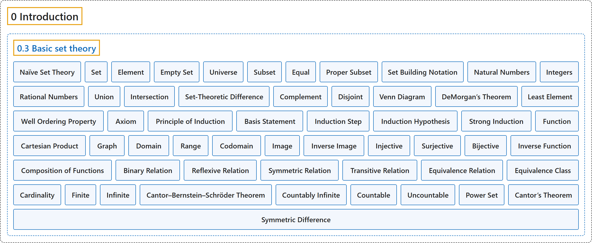

0.3 Basic set theory
Classification

Glossary
| Term | Definition | 中文翻译 | Source |
|---|---|---|---|
| 0.3 Basic set theory 基本集合论 |
(No definition) | （无定义） | Lebl, 2026, section 0.3 |
| Naïve Set Theory 朴素集合论 |
"We talk about sets in a rather informal way, using what is usually called “naïve set theory.”" | 我们以一种相当非正式的方式谈论集合，用的是通常所说的“朴素集合论”。 | Lebl, 2026, section 0.3 |
| Set 集合 |
"A set is a collection of objects called elements or members." | 集合是由称为元素或成员的对象组成的一个总体。 | Lebl, 2026, Definition 0.3.1 |
| Element 元素 |
"A set is a collection of objects called elements or members." | 集合是由称为元素或成员的对象组成的一个总体。 | Lebl, 2026, Definition 0.3.1 |
| Empty Set 空集 |
"A set with no objects is called the empty set and is denoted by \(\emptyset\) (or sometimes by \(\{ \}\))." | 不含任何对象的集合称为空集，记作 \(\emptyset\)（有时也记作 \(\{ \}\)）。 | Lebl, 2026, Definition 0.3.1 |
| Universe 全集 |
"The elements of all sets under consideration come from some set we call the universe." | 所考虑的一切集合的元素都来自某个集合，我们称之为全集。 | Lebl, 2026, section 0.3 |
| Subset 子集 |
"A set \(A\) is a subset of a set \(B\) if \(x \in A\) implies \(x \in B\), and we write \(A \subset B\)." | 若 \(x \in A\) 蕴含 \(x \in B\)，则集合 \(A\) 是集合 \(B\) 的子集，记作 \(A \subset B\)。 | Lebl, 2026, Definition 0.3.2 |
| Equal 相等 |
"Two sets \(A\) and \(B\) are equal if \(A \subset B\) and \(B \subset A\)." | 若 \(A \subset B\) 且 \(B \subset A\)，则两个集合 \(A\) 与 \(B\) 相等。 | Lebl, 2026, Definition 0.3.2 |
| Proper Subset 真子集 |
"A set \(A\) is a proper subset of \(B\) if \(A \subset B\) and \(A \neq B\)." | 若 \(A \subset B\) 且 \(A \neq B\)，则集合 \(A\) 是 \(B\) 的真子集。 | Lebl, 2026, Definition 0.3.2 |
| Set Building Notation 集合构造记号 |
"To define new sets, one often uses the set building notation, \(\bigl\{ x \in A : P(x) \bigr\}\). This notation refers to a subset of the set \(A\) containing all elements of \(A\) that satisfy the property \(P(x)\)." | 定义新集合时常用集合构造记号 \(\bigl\{ x \in A : P(x) \bigr\}\)。这个记号表示集合 \(A\) 中由满足性质 \(P(x)\) 的全部元素组成的子集。 | Lebl, 2026, section 0.3 |
| Natural Numbers 自然数 |
"The set of natural numbers, \(\mathbb{N} := \{ 1, 2, 3, \ldots \}\)." | 自然数集，\(\mathbb{N} := \{ 1, 2, 3, \ldots \}\)。 | Lebl, 2026, Example 0.3.3 |
| Integers 整数 |
"The set of integers, \(\mathbb{Z} := \{ 0, -1, 1, -2, 2, \ldots \}\)." | 整数集，\(\mathbb{Z} := \{ 0, -1, 1, -2, 2, \ldots \}\)。 | Lebl, 2026, Example 0.3.3 |
| Rational Numbers 有理数 |
"The set of rational numbers, \(\mathbb{Q} := \bigl\{ \frac{m}{n} : m, n \in \mathbb{Z} \text{ and } n \neq 0 \bigr\}\)." | 有理数集，\(\mathbb{Q} := \bigl\{ \frac{m}{n} : m, n \in \mathbb{Z} \text{ and } n \neq 0 \bigr\}\)。 | Lebl, 2026, Example 0.3.3 |
| Union 并集 |
"A union of two sets \(A\) and \(B\) is defined as \(A \cup B := \{ x : x \in A \text{ or } x \in B \}\)." | 两个集合 \(A\) 与 \(B\) 的并集定义为 \(A \cup B := \{ x : x \in A \text{ or } x \in B \}\)。 | Lebl, 2026, Definition 0.3.4 |
| Intersection 交集 |
"An intersection of two sets \(A\) and \(B\) is defined as \(A \cap B := \{ x : x \in A \text{ and } x \in B \}\)." | 两个集合 \(A\) 与 \(B\) 的交集定义为 \(A \cap B := \{ x : x \in A \text{ and } x \in B \}\)。 | Lebl, 2026, Definition 0.3.4 |
| Set-Theoretic Difference 差集 |
"A complement of \(B\) relative to \(A\) (or set-theoretic difference of \(A\) and \(B\)) is defined as \(A \setminus B := \{ x : x \in A \text{ and } x \notin B \}\)." | \(B\) 相对于 \(A\) 的补集（或 \(A\) 与 \(B\) 的差集）定义为 \(A \setminus B := \{ x : x \in A \text{ and } x \notin B \}\)。 | Lebl, 2026, Definition 0.3.4 |
| Complement 补集 |
"We say complement of \(B\) and write \(B^c\) instead of \(A \setminus B\) if the set \(A\) is either the entire universe or if it is the obvious set containing \(B\), and is understood from context." | 如果集合 \(A\) 是整个全集，或者是包含 \(B\) 的显而易见的集合，并且从上下文可以明白，我们就说 \(B\) 的补集，记作 \(B^c\) 而不写 \(A \setminus B\)。 | Lebl, 2026, Definition 0.3.4 |
| Disjoint 不相交 |
"We say sets \(A\) and \(B\) are disjoint if \(A \cap B = \emptyset\)." | 若 \(A \cap B = \emptyset\)，则称集合 \(A\) 与 \(B\) 不相交。 | Lebl, 2026, Definition 0.3.4 |
| Venn Diagram 维恩图 |
"We illustrate the operations on the Venn diagrams in Figure 2." | 我们在图 2 的维恩图上图示这些运算。 | Lebl, 2026, section 0.3 |
| DeMorgan’s Theorem 德摩根定理 |
"Let \(A, B, C\) be sets. Then \({(B \cup C)}^c = B^c \cap C^c , \qquad {(B \cap C)}^c = B^c \cup C^c ,\) or, more generally, \(A \setminus (B \cup C) = (A \setminus B) \cap (A \setminus C) , \qquad A \setminus (B \cap C) = (A \setminus B) \cup (A \setminus C) .\)" | 设 \(A, B, C\) 是集合，则 \({(B \cup C)}^c = B^c \cap C^c , \qquad {(B \cap C)}^c = B^c \cup C^c ,\) 更一般地，\(A \setminus (B \cup C) = (A \setminus B) \cap (A \setminus C) , \qquad A \setminus (B \cap C) = (A \setminus B) \cup (A \setminus C) .\) | Lebl, 2026, Theorem 0.3.5 |
| Least Element 最小元 |
"By \(S \subset \mathbb{N}\) having a least element, we mean that there exists an \(x \in S\), such that for every \(y \in S\), we have \(x \leq y\)." | 说 \(S \subset \mathbb{N}\) 有最小元，是指存在 \(x \in S\)，使得对每个 \(y \in S\) 都有 \(x \leq y\)。 | Lebl, 2026, section 0.3 |
| Well Ordering Property 良序性 |
"Every nonempty subset of \(\mathbb{N}\) has a least (smallest) element" | \(\mathbb{N}\) 的每个非空子集都有最小元 | Lebl, 2026, Axiom (Well ordering property of ℕ) |
| Axiom 公理 |
"The natural numbers \(\mathbb{N}\) ordered in the natural way possess the well ordering property. We take this property as an axiom; we simply assume it is true." | 按自然顺序排列的自然数 \(\mathbb{N}\) 具有良序性。我们把这个性质当作公理，即直接假定它成立。 | Lebl, 2026, section 0.3 |
| Principle of Induction 归纳原理 |
"Let \(P(n)\) be a statement depending on a natural number \(n\). Suppose that (basis statement) \(P(1)\) is true. (induction step) If \(P(n)\) is true, then \(P(n+1)\) is true. Then \(P(n)\) is true for all \(n \in \mathbb{N}\)." | 设 \(P(n)\) 是依赖于自然数 \(n\) 的命题。假设（基础命题）\(P(1)\) 为真；（归纳步骤）若 \(P(n)\) 为真，则 \(P(n+1)\) 为真。那么对所有 \(n \in \mathbb{N}\)，\(P(n)\) 为真。 | Lebl, 2026, Theorem 0.3.6 |
| Basis Statement 基础命题 |
"(basis statement) \(P(1)\) is true." | （基础命题）\(P(1)\) 为真。 | Lebl, 2026, Theorem 0.3.6 |
| Induction Step 归纳步骤 |
"(induction step) If \(P(n)\) is true, then \(P(n+1)\) is true." | （归纳步骤）若 \(P(n)\) 为真，则 \(P(n+1)\) 为真。 | Lebl, 2026, Theorem 0.3.6 |
| Induction Hypothesis 归纳假设 |
"The assumption that \(P(n)\) is true in “if \(P(n)\) is true, then \(P(n+1)\) is true” is usually called the induction hypothesis." | “若 \(P(n)\) 为真，则 \(P(n+1)\) 为真”中假定 \(P(n)\) 为真的那个假设，通常称为归纳假设。 | Lebl, 2026, section 0.3 |
| Strong Induction 强归纳法 |
"Sometimes, it is easier to use in the inductive step that \(P(k)\) is true for all \(k = 1,2,\ldots,n\), not just for \(k=n\). This principle is called strong induction and is equivalent to the normal induction above." | 有时在归纳步骤中用对所有 \(k = 1,2,\ldots,n\)（而不只是 \(k=n\)）\(P(k)\) 都为真会更方便。这个原理称为强归纳法，它与上面的普通归纳法等价。 | Lebl, 2026, section 0.3 |
| Function 函数 |
"Informally, a set-theoretic function \(f\) taking a set \(A\) to a set \(B\) is a mapping that to each \(x \in A\) assigns a unique \(y \in B\)." | 非正式地说，把集合 \(A\) 带到集合 \(B\) 的集合论函数 \(f\) 是一个给每个 \(x \in A\) 指定唯一 \(y \in B\) 的映射。 | Lebl, 2026, section 0.3 |
| Cartesian Product 笛卡儿积 |
"Let \(A\) and \(B\) be sets. The Cartesian product is the set of tuples defined as \(A \times B := \bigl\{ (x,y) : x \in A, y \in B \bigr\}\)." | 设 \(A\) 与 \(B\) 是集合。笛卡儿积是如下定义的有序组的集合：\(A \times B := \bigl\{ (x,y) : x \in A, y \in B \bigr\}\)。 | Lebl, 2026, Definition 0.3.10 |
| Graph 图像 |
"If we consider \(f\) simply as a subset in \(A \times B\), then we call this set the graph of the function." | 如果把 \(f\) 单纯看作 \(A \times B\) 中的一个子集，就称这个集合为函数的图像。 | Lebl, 2026, Definition 0.3.11 |
| Domain 定义域 |
"The set \(A\) is called the domain of \(f\) (and sometimes confusingly denoted \(D(f)\))." | 集合 \(A\) 称为 \(f\) 的定义域（有时也容易混淆地记作 \(D(f)\)）。 | Lebl, 2026, Definition 0.3.11 |
| Range 值域 |
"The set \(R(f) := \{ y \in B : \text{there exists an } x \in A \text{ such that } f(x)=y \}\) is called the range of \(f\)." | 集合 \(R(f) := \{ y \in B : \text{there exists an } x \in A \text{ such that } f(x)=y \}\) 称为 \(f\) 的值域。 | Lebl, 2026, Definition 0.3.11 |
| Codomain 陪域 |
"The set \(B\) is called the codomain of \(f\)." | 集合 \(B\) 称为 \(f\) 的陪域。 | Lebl, 2026, Definition 0.3.11 |
| Image 像 |
"Define the image (or direct image) of a subset \(C \subset A\) as \(f(C) := \bigl\{ f(x) \in B : x \in C \bigr\}\)." | 子集 \(C \subset A\) 的像（或正像）定义为 \(f(C) := \bigl\{ f(x) \in B : x \in C \bigr\}\)。 | Lebl, 2026, Definition 0.3.13 |
| Inverse Image 原像 |
"Define the inverse image of a subset \(D \subset B\) as \(f^{-1}(D) := \bigl\{ x \in A : f(x) \in D \bigr\}\)." | 子集 \(D \subset B\) 的原像定义为 \(f^{-1}(D) := \bigl\{ x \in A : f(x) \in D \bigr\}\)。 | Lebl, 2026, Definition 0.3.13 |
| Injective 单射的 |
"Let \(f \colon A \to B\) be a function. The function \(f\) is said to be injective or one-to-one if \(f(x_1) = f(x_2)\) implies \(x_1 = x_2\). In other words, \(f\) is injective if for all \(y \in B\), the set \(f^{-1}(\{y\})\) is empty or consists of a single element. We call such an \(f\) an injection." | 设 \(f \colon A \to B\) 是函数。若 \(f(x_1) = f(x_2)\) 蕴含 \(x_1 = x_2\)，则称 \(f\) 是单射的或一对一的。换句话说，若对所有 \(y \in B\)，集合 \(f^{-1}(\{y\})\) 为空或只含一个元素，则 \(f\) 是单射的。这样的 \(f\) 称为单射。 | Lebl, 2026, Definition 0.3.17 |
| Surjective 满射的 |
"If \(f(A) = B\), then we say \(f\) is surjective or onto. In other words, \(f\) is surjective if the range and the codomain of \(f\) are equal. We call such an \(f\) a surjection." | 若 \(f(A) = B\)，则称 \(f\) 是满射的或映上的。换句话说，若 \(f\) 的值域与陪域相等，则 \(f\) 是满射的。这样的 \(f\) 称为满射。 | Lebl, 2026, Definition 0.3.17 |
| Bijective 双射的 |
"If \(f\) is both surjective and injective, then we say \(f\) is bijective or that \(f\) is a bijection." | 若 \(f\) 既是满射的又是单射的，则称 \(f\) 是双射的，或称 \(f\) 是一个双射。 | Lebl, 2026, Definition 0.3.17 |
| Inverse Function 反函数 |
"When \(f \colon A \to B\) is a bijection, then the inverse image of a single element, \(f^{-1}(\{y\})\), is always a unique element of \(A\). We then consider \(f^{-1}\) as a function \(f^{-1} \colon B \to A\) and we write simply \(f^{-1}(y)\). In this case, we call \(f^{-1}\) the inverse function of \(f\)." | 当 \(f \colon A \to B\) 是双射时，单个元素的原像 \(f^{-1}(\{y\})\) 总是 \(A\) 中唯一的一个元素。这时我们把 \(f^{-1}\) 看作函数 \(f^{-1} \colon B \to A\)，并简单地写作 \(f^{-1}(y)\)。在这种情况下，称 \(f^{-1}\) 为 \(f\) 的反函数。 | Lebl, 2026, section 0.3 |
| Composition of Functions 函数的复合 |
"Consider \(f \colon A \to B\) and \(g \colon B \to C\). The composition of the functions \(f\) and \(g\) is the function \(g \circ f \colon A \to C\) defined as \((g \circ f)(x) := g\bigl(f(x)\bigr)\)." | 考虑 \(f \colon A \to B\) 与 \(g \colon B \to C\)。函数 \(f\) 与 \(g\) 的复合是如下定义的函数 \(g \circ f \colon A \to C\)：\((g \circ f)(x) := g\bigl(f(x)\bigr)\)。 | Lebl, 2026, Definition 0.3.18 |
| Binary Relation 二元关系 |
"Given a set \(A\), a binary relation on \(A\) is a subset \(\mathcal{R} \subset A \times A\), which consists of those pairs where the relation is said to hold." | 给定集合 \(A\)，\(A\) 上的二元关系是一个子集 \(\mathcal{R} \subset A \times A\)，由关系成立的那些有序对组成。 | Lebl, 2026, Definition 0.3.19 |
| Reflexive Relation 自反关系 |
"A relation \(\mathcal{R}\) on a set \(A\) is said to be Reflexive if \(a\, \mathcal{R} \, a\) for all \(a \in A\)." | 集合 \(A\) 上的关系 \(\mathcal{R}\) 称为自反的，如果对所有 \(a \in A\) 有 \(a\, \mathcal{R} \, a\)。 | Lebl, 2026, Definition 0.3.21 |
| Symmetric Relation 对称关系 |
"A relation \(\mathcal{R}\) on a set \(A\) is said to be Symmetric if \(a\, \mathcal{R} \, b\) implies \(b \, \mathcal{R} \, a\)." | 集合 \(A\) 上的关系 \(\mathcal{R}\) 称为对称的，如果 \(a\, \mathcal{R} \, b\) 蕴含 \(b \, \mathcal{R} \, a\)。 | Lebl, 2026, Definition 0.3.21 |
| Transitive Relation 传递关系 |
"A relation \(\mathcal{R}\) on a set \(A\) is said to be Transitive if \(a\, \mathcal{R} \, b\) and \(b \, \mathcal{R} \, c\) implies \(a\, \mathcal{R} \, c\)." | 集合 \(A\) 上的关系 \(\mathcal{R}\) 称为传递的，如果 \(a\, \mathcal{R} \, b\) 且 \(b \, \mathcal{R} \, c\) 蕴含 \(a\, \mathcal{R} \, c\)。 | Lebl, 2026, Definition 0.3.21 |
| Equivalence Relation 等价关系 |
"If \(\mathcal{R}\) is reflexive, symmetric, and transitive, then it is said to be an equivalence relation." | 若 \(\mathcal{R}\) 是自反的、对称的和传递的，则称它为等价关系。 | Lebl, 2026, Definition 0.3.21 |
| Equivalence Class 等价类 |
"Let \(A\) be a set and \(\mathcal{R}\) an equivalence relation. An equivalence class of \(a \in A\), often denoted by \([a]\), is the set \(\{ x \in A : a\, \mathcal{R} \, x \}\)." | 设 \(A\) 是集合，\(\mathcal{R}\) 是等价关系。\(a \in A\) 的等价类常记作 \([a]\)，它是集合 \(\{ x \in A : a\, \mathcal{R} \, x \}\)。 | Lebl, 2026, Definition 0.3.23 |
| Cardinality 基数 |
"Let \(A\) and \(B\) be sets. We say \(A\) and \(B\) have the same cardinality when there exists a bijection \(f \colon A \to B\). We denote by \(\lvert A \rvert\) the equivalence class of all sets with the same cardinality as \(A\), and we simply call \(\lvert A \rvert\) the cardinality of \(A\)." | 设 \(A\) 与 \(B\) 是集合。当存在双射 \(f \colon A \to B\) 时，称 \(A\) 与 \(B\) 有相同的基数。用 \(\lvert A \rvert\) 表示与 \(A\) 有相同基数的全体集合构成的等价类，并简单地称 \(\lvert A \rvert\) 为 \(A\) 的基数。 | Lebl, 2026, Definition 0.3.26 |
| Finite 有限 |
"If \(A\) has the same cardinality as \(\{ 1,2,3,\ldots,n \}\) for some \(n \in \mathbb{N}\), we write \(\lvert A \rvert := n\). If \(A\) is empty, we write \(\lvert A \rvert := 0\). In either case, we say that \(A\) is finite." | 若对某个 \(n \in \mathbb{N}\)，\(A\) 与 \(\{ 1,2,3,\ldots,n \}\) 有相同的基数，就写 \(\lvert A \rvert := n\)。若 \(A\) 为空，就写 \(\lvert A \rvert := 0\)。在这两种情况下，都称 \(A\) 是有限的。 | Lebl, 2026, Definition 0.3.27 |
| Infinite 无限 |
"We say \(A\) is infinite or “of infinite cardinality” if \(A\) is not finite." | 若 \(A\) 不是有限的，则称 \(A\) 是无限的或“具有无限基数”。 | Lebl, 2026, Definition 0.3.27 |
| Cantor–Bernstein–Schröder Theorem 康托尔–伯恩斯坦–施罗德定理 |
"We state without proof that \(A\) and \(B\) have the same cardinality if and only if \(\lvert A \rvert \leq \lvert B \rvert\) and \(\lvert B \rvert \leq \lvert A \rvert\). This result is the Cantor–Bernstein–Schröder theorem." | 我们不加证明地指出：\(A\) 与 \(B\) 有相同的基数，当且仅当 \(\lvert A \rvert \leq \lvert B \rvert\) 且 \(\lvert B \rvert \leq \lvert A \rvert\)。这个结果就是康托尔–伯恩斯坦–施罗德定理。 | Lebl, 2026, section 0.3 |
| Countably Infinite 可数无穷 |
"If \(\lvert A \rvert = \lvert \mathbb{N} \rvert\), then we say \(A\) is countably infinite." | 若 \(\lvert A \rvert = \lvert \mathbb{N} \rvert\)，则称 \(A\) 是可数无穷的。 | Lebl, 2026, Definition 0.3.29 |
| Countable 可数 |
"If \(A\) is finite or countably infinite, then we say \(A\) is countable." | 若 \(A\) 是有限的或可数无穷的，则称 \(A\) 是可数的。 | Lebl, 2026, Definition 0.3.29 |
| Uncountable 不可数 |
"If \(A\) is not countable, then \(A\) is said to be uncountable." | 若 \(A\) 不是可数的，则称 \(A\) 是不可数的。 | Lebl, 2026, Definition 0.3.29 |
| Power Set 幂集 |
"The power set of a set \(A\), denoted by \(\mathcal{P}(A)\), is the set of all subsets of \(A\)." | 集合 \(A\) 的幂集记作 \(\mathcal{P}(A)\)，是 \(A\) 的全部子集构成的集合。 | Lebl, 2026, Definition 0.3.33 |
| Cantor’s Theorem 康托尔定理 |
"Let \(A\) be a set. Then \(\lvert A \rvert < \bigl\lvert \mathcal{P}(A) \bigr\rvert\). In particular, there exists no surjection from \(A\) onto \(\mathcal{P}(A)\)." | 设 \(A\) 是集合，则 \(\lvert A \rvert < \bigl\lvert \mathcal{P}(A) \bigr\rvert\)。特别地，不存在从 \(A\) 到 \(\mathcal{P}(A)\) 的满射。 | Lebl, 2026, Theorem 0.3.34 |
| Symmetric Difference 对称差 |
"Let \(A \Delta B\) denote the symmetric difference, that is, the set of all elements that belong to either \(A\) or \(B\), but not to both \(A\) and \(B\)." | 用 \(A \Delta B\) 表示对称差，即属于 \(A\) 或 \(B\)、但不同时属于 \(A\) 和 \(B\) 的全部元素构成的集合。 | Lebl, 2026, Exercise 0.3.7 |
References
Lebl, J. (2026). Basic analysis I & II: Introduction to real analysis (May 22, 2026 edition). Retrieved October 29, 2026, from https://www.jirka.org/ra/html/